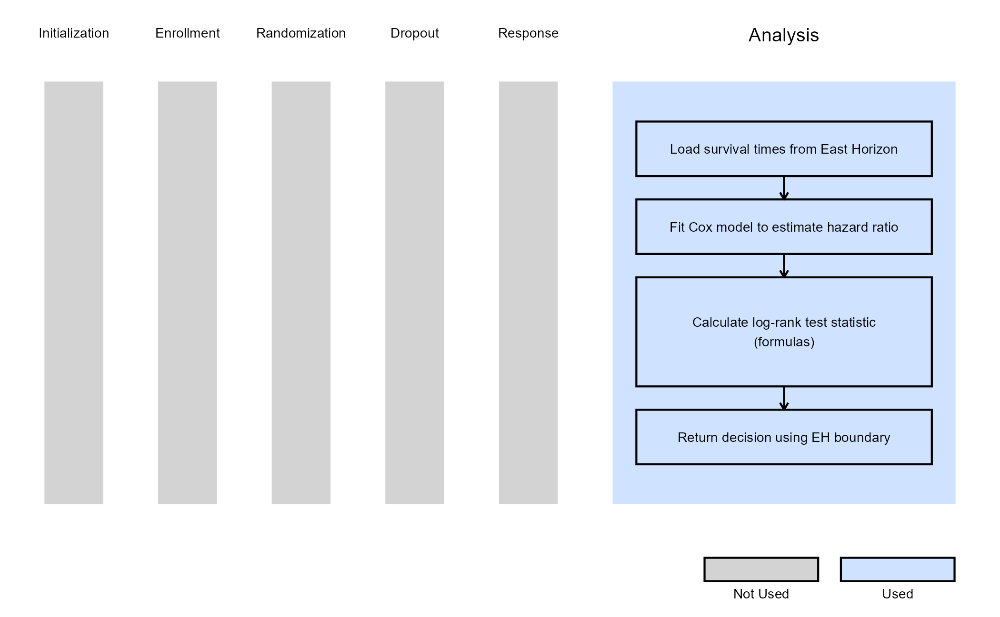
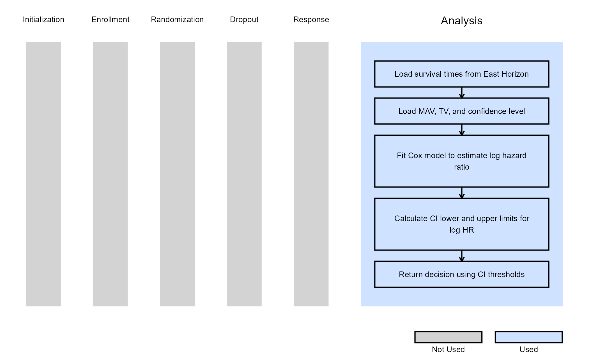
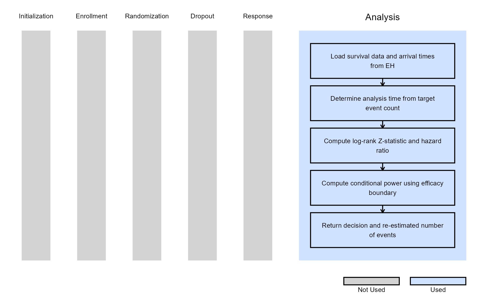
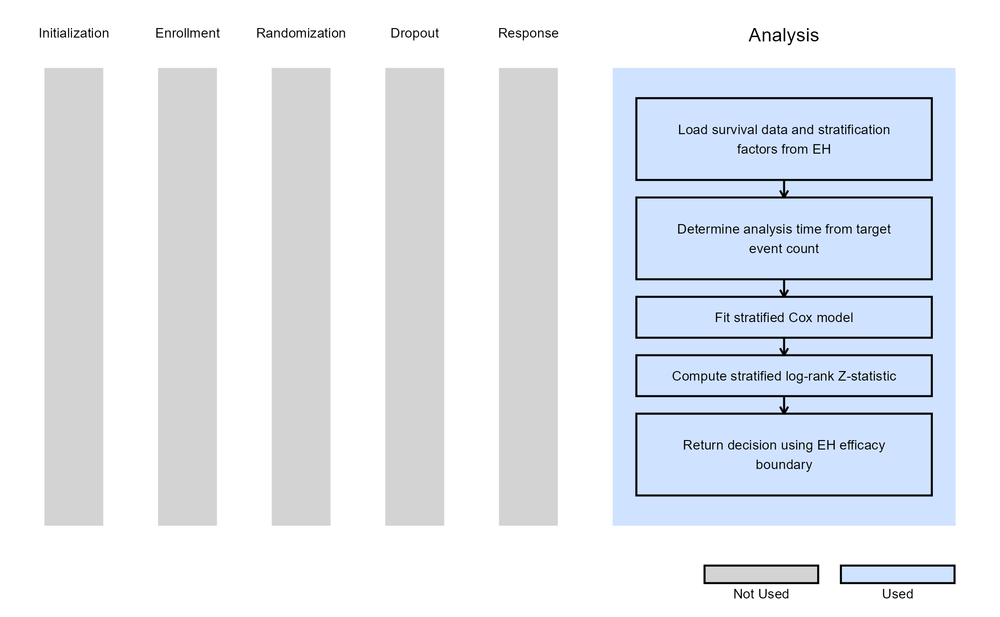
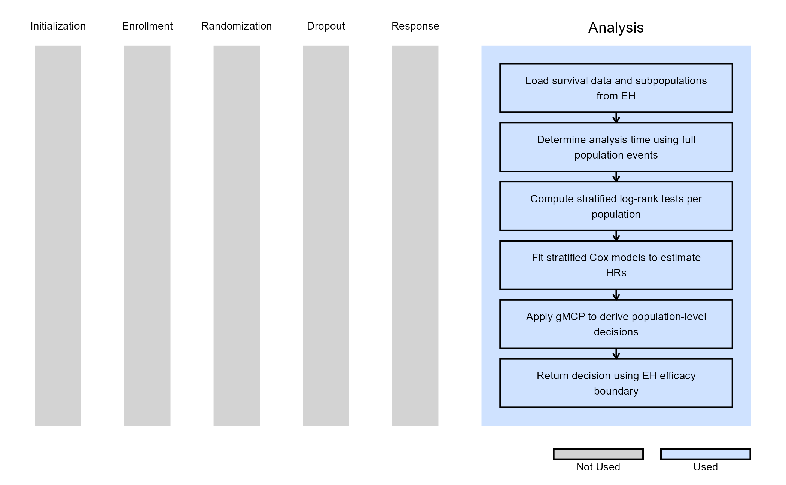

2-Arm, Time-To-Event Outcome - Analysis
Anoop Singh Rawat, Shubham Lahoti, and Gabriel Potvin
January 09, 2026
2ArmTimeToEventOutcomeAnalysis.RmdThis example is related to the Integration Point: Analysis - Time-to-Event Outcome. Click the link for setup instructions, variable details, and additional information about this integration point.
- Study objective: Two Arm Confirmatory
- Number of endpoints: Single Endpoint
- Endpoint type: Time-to-Event Outcome
- Task: Any
- Statistical Design:
- Fixed Sample or Group Sequential for Examples 1, 2, 3, 5, and 6
- Group Sequential with Sample Size Re-Estimation for Example 4
- Stratification turned on: For Examples 5 and 6
- Subpopulations turned on: For Example 6
Note: Examples 1, 2, 3, 5, and 6 are compatible with both Fixed Sample and Group Sequential statistical designs. The R code automatically detects whether interim look information (LookInfo) is available and adjusts the analysis parameters accordingly.
Introduction
The following examples illustrate how to integrate new analysis capabilities into East Horizon or East using R functions in the context of a two-arm trial. In each example, the trial design includes a standard-of-care control arm and an experimental treatment arm, with patient outcomes modeled as time-to-event data. The design includes two interim analyses (IA) and one final analysis (FA). At each IA, an analysis is conducted which may lead to early stopping for efficacy or futility, depending on the predefined design criteria.
Once CyneRgy is installed, you can load this example in RStudio with the following commands:
CyneRgy::RunExample( "2ArmTimeToEventOutcomeAnalysis" )Running the command above will load the RStudio project in RStudio.
RStudio Project File: 2ArmTimeToEventOutcomeAnalysis.Rproj
In the R directory of this example you will find the following R files:
AnalyzeUsingEastLogrankFormula.R - Contains a function named AnalyzeUsingEastLogrankFormula.R that computes the test statistic for a TTE endpoint using Formulas of Appendix Q.8 from the East manual.
AnalyzeUsingSurvivalPackage.R - Contains a function named AnalyzeUsingSurvivalPackage that performs the analysis the R package
survival.AnalyzeUsingHazardRatioLimitsOfCI.R - Contains a function named AnalyzeUsingHazardRatioLimitsOfCI that bases interim and final decisions on confidence interval limits rather than East Horizon-provided boundaries. The function uses user-defined parameters (MAV, TV, and confidence level) to implement a Go / No-Go decision framework.
AnalyzeTTESSR.R - Contains a function named AnalyzeTTESSR that extends the standard TTE analysis to support conditional power–based sample size re-estimation (SSR) in a group sequential design.
AnalyzeStratification.R - Contains a function named AnalyzeStratification that extends the standard TTE analysis to support stratification.
AnalyzeSubpopulation.R - Contains a function named AnalyzeSubpopulation that extends the standard TTE analysis to support subpopulations.
Example 1 - Using Formulas Q.242 and Q.243 from the East manual
This example is related to this R file: AnalyzeUsingEastLogrankFormula.R
In this example, the analysis is customized by replacing the default method with a user-defined calculation based on formulas of the Appendix Q.8 - Survival : Two Samples from the East manual (Q.242 and Q.243).
Numerator of Test Statistic:
With:
Where:
- is the weight for the Logrank Test.
- and are the numbers of events at time in the treatment and control groups, respectively.
- and are the numbers of subjects at risk just before time in the treatment and control groups, respectively.
- is the total number of events at time .
- is the total number of subjects at risk just before time .
Denominator of Test Statistic:
With:
The objective is to demonstrate a straightforward way to modify both the analysis and decision-making process. The computed test statistic is compared to the efficacy boundary provided by East Horizon or East as input. This example does not include a futility rule and does not use any user-defined parameters.
The figure below illustrates where this example fits within the R integration points of Cytel products, accompanied by a flowchart outlining the general steps performed by the R code.

Example 2 - Using the survival::survdiff()
Function
This example is related to this R file: AnalyzeUsingSurvivalPackage.R
This example utilizes the survival::survdiff() function
from the survival package to perform the log-rank test. The
resulting chi-square statistic is used to compute the log-rank value,
which is then compared to the lower efficacy boundary provided by East
Horizon or East. Like Example 1, this example does not include a
futility rule and does not use any user-defined parameters.
The figure below illustrates where this example fits within the R integration points of Cytel products, accompanied by a flowchart outlining the general steps performed by the R code.

Example 3 - Utilization of Confidence Interval Limits for Go/No-Go Decision-Making
This example is related to this R file: AnalyzeUsingHazardRatioLimitsOfCI.R
In many Phase II trials, Go/No-Go decisions are made based on whether a treatment shows sufficient promise to justify further development. These decisions are often guided by two key thresholds:
- Minimum Acceptable Value (MAV): The smallest treatment effect (e.g., hazard ratio) considered meaningful.
- Target Value (TV): A highly desirable treatment effect based on clinical or strategic considerations.
This example demonstrates how to approximate probabilistic decision-making using frequentist confidence intervals (CIs), ignoring the boundaries provided by East Horizon or East in favor of a CI-based logic. If the hazard ratio is likely to be below the MAV, a Go decision is made. If not, and it is unlikely to be below the TV, a No-Go decision is made.
We use the Cox proportional hazards model via the
survival::coxph() function to estimate the log hazard ratio
(log HR) and its standard error. Based on these estimates, frequentist
CIs are constructed to inform decision-making. Specifically:
At Interim Analysis
- Let LL and UL be the lower and upper limits of the confidence interval for the log HR.
- If
- If
- Otherwise Continue to the next analysis
At Final Analysis
- If
- Otherwise No-Go
Refer to the table below for the definitions of the user-defined parameters used in this example.
| User parameter | Definition |
|---|---|
| dMAV | Minimum Acceptable Value: the smallest treatment effect considered clinically meaningful to warrant further development. |
| dTV | Target Value: the desired treatment effect that would represent a strong clinical benefit or strategic advantage. |
| dConfLevel | Confidence Level: the level of confidence used to construct the confidence interval for Go/No-Go decision-making (e.g., 0.80 for an 80% CI). |
Note: In this example, the boundary information that is computed in East Horizon or East is ignored. User-defined parameters and the Cox model are used to analyze the data and compute the desired confidence intervals.
The figure below illustrates where this example fits within the R integration points of Cytel products, accompanied by a flowchart outlining the general steps performed by the R code.

Example 4 - Analysis With Sample Size Re-Estimation
This example is related to this R file: AnalyzeTTESSR.R
This example illustrates how to customize the analysis when using
Statistical Design = Group Sequential with Sample Size Re-Estimation
in East Horizon. The key difference from the previous examples is that
the analysis function is responsible not only for producing a test
statistic and interim decision, but also for computing a re-estimated
total number of events based on interim results. This is achieved using
a conditional power–based SSR approach, which allows the trial to
increase its planned number of events when interim results fall within a
“promising zone”.
Test Statistic:
At each interim look, the analysis time is determined based on the target cumulative number of events implied by the current information fraction. Survival data are censored at this analysis time, and a log-rank–style standardized Z-statistic is computed based on the observed and expected number of events in the treatment arm:
where is the observed number of events in the treatment arm, is the expected number of events under the null hypothesis, and is the corresponding variance. Under the proportional hazards assumption, this statistic is asymptotically standard normal.
In addition, a Cox proportional hazards model is fit to the observed data to estimate the hazard ratio (HR) between treatment and control arms.
Conditional Power:
Using the observed Z-statistic, the information fraction at the current look, and the efficacy boundary provided by East Horizon, the conditional power is computed. This represents the probability of eventually crossing the final efficacy boundary, given the interim data and assuming the observed treatment effect continues for the remainder of the trial.
Sample Size Re-Estimation (SSR):
Based on the computed conditional power, the total number of events is re-estimated using one of two SSR rules:
| Condition | Rule |
|---|---|
The SSR function scale for promising zone selected in East Horizon
is “Continuous” (AdaptInfo$SSRFuncScale == 0) |
If the conditional power falls between the lower and upper
promising-zone thresholds selected in East Horizon
(AdaptInfo$PromZoneMin and
AdaptInfo$PromZoneMax), the maximum number of event is
multiplied by the maximum sample size multiplier input specified in East
Horizon (AdaptInfo$MaxSSMultInp$MaxSSMult). |
The SSR function scale for promising zone selected in East Horizon
is “Step” (AdaptInfo$SSRFuncScale == 1) |
The conditional power is mapped to intervals specified in East
Horizon (AdaptInfo$MaxSSMultInp$From,
AdaptInfo$MaxSSMultInp$To), each associated with a specific
sample size multiplier specified in East Horizon
(AdaptInfo$MaxSSMultInp$MaxSSMult). |
If the conditional power falls outside the promising zone, the original planned number of events is retained.
Finally, the Z-statistic is compared against the efficacy boundary
provided by East Horizon. At interim looks, crossing the boundary
results in an early efficacy decision, while at the final look a lack of
boundary crossing results in a futility decision. Both the decision and
the re-estimated total number of events (ReEstEvents) are
returned to East Horizon.
The figure below illustrates where this example fits within the R integration points of Cytel products, accompanied by a flowchart outlining the general steps performed by the R code.

Example 5 - Analysis with Stratification
This example is related to this R file: AnalyzeStratification.R
This example illustrates how to customize the analysis when turning
on Stratification in East Horizon. Stratification is
commonly used to adjust for prognostic baseline covariates and to
improve the efficiency and interpretability of treatment comparisons in
confirmatory trials.
In this implementation, the look timing and decision boundaries continue to be controlled by East Horizon, while the test statistic and hazard ratio are computed using a stratified log-rank approach in R.
Analysis Overview
At each interim or final analysis, the function:
- Determines the target number of events corresponding to the current look.
- Censors the data at the analysis time implied by this target.
- Constructs a stratified log-rank test using the stratification factors specified in the study design.
- Fits a stratified Cox proportional hazards model to estimate the hazard ratio (HR).
- Compares the standardized test statistic to the efficacy boundary supplied by East Horizon.
The stratification factors defined in East Horizon
(DesignParam$TestStratFactors) are used.
Test Statistic
The stratified log-rank test is implemented using
survival::survdiff() with strata terms dynamically
constructed from the design inputs. The chi-square statistic returned by
the function is converted to a signed Z-statistic:
The sign of the statistic is determined by the estimated hazard ratio:
- If , the statistic is negative (favoring treatment).
- If , the statistic is positive.
Finally, the Z-statistic is compared against the efficacy boundary provided by East Horizon. At interim looks, crossing the boundary results in an early efficacy decision, while at the final look a lack of boundary crossing results in a futility decision.
The figure below illustrates where this example fits within the R integration points of Cytel products, accompanied by a flowchart outlining the general steps performed by the R code.

Example 6 - Analysis with Subpopulations (Using gMCP)
This example is related to this R file: AnalyzeSubpopulation.R
This example illustrates how to customize the analysis when turning
on Stratification and Subpopulations in East
Horizon, while controlling the family-wise Type I error rate using a
graphical multiple comparison procedure (gMCP).
The analysis is based on a single event-driven look schedule defined for the full population, while treatment effects are evaluated simultaneously in the full population, and in each subpopulation.
Analysis Overview
At each interim or final analysis, the function:
- Determines the analysis time based on the cumulative number of events in the full population. Note: Analysis times can instead be based on a subpopulation by modifying this code accordingly.
- Prepares censored survival data up to this analysis time.
- Identifies the full population and each predefined subpopulation using logical filters derived from baseline covariates.
- For each population:
- Selects the applicable stratification factors
- Computes a stratified log-rank test statistic
- Fits a stratified Cox model to estimate the hazard ratio
- Collects population-specific test statistics and applies the graphical MCP to determine which null hypotheses can be rejected.
- Maps MCP rejection flags to East Horizon decision codes.
The subpopulation parameters defined in East Horizon are used
(DesignParam$NumSubPops,
DesignParam$SubpopName, DesignParam$SubPops,
DesignParam$TransitionMatrix).
Multiple Testing Control
The graphical multiple comparison procedure is implemented using the
gMCPLite package. For each population, raw p-values are
computed from the standardized test statistics. Alpha is allocated
across hypotheses according to prespecified weights and propagated
across populations via a transition matrix, allowing flexible testing
strategies such as hierarchical or parallel testing across
populations.
Finally, the Z-statistic is compared against the efficacy boundary provided by East Horizon. At interim looks, crossing the boundary results in an early efficacy decision, while at the final look a lack of boundary crossing results in a futility decision.
The figure below illustrates where this example fits within the R integration points of Cytel products, accompanied by a flowchart outlining the general steps performed by the R code.
